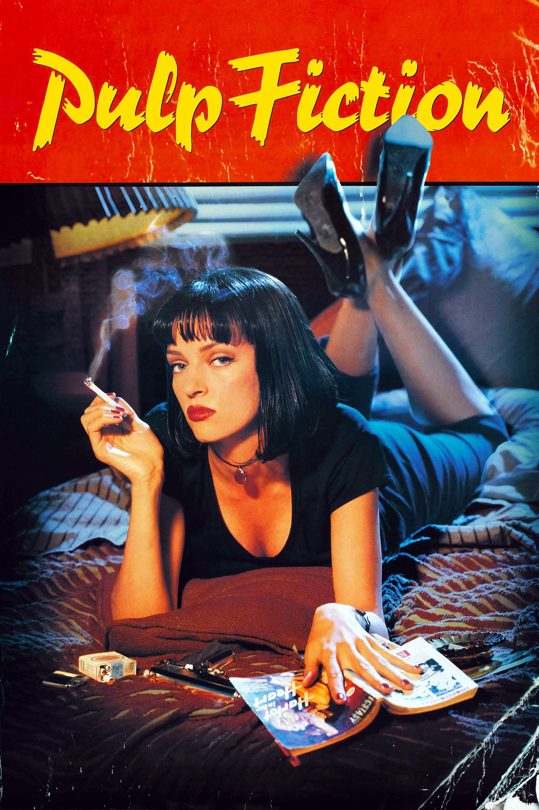

Você já se perguntou o que é
necessário para aprender inglês?
Pulp Fiction é um filme de drama polícial escrito e dirigido por Quentin Tarantino. O filme contém muita violência, mas é um clássico indispensável.
 Harry potter, assim como o livro, é uma boa escolha para assistir em inglês, por causa de sua linguagem que é mais facil. A historia fala sobre o menino Harry Potter que descobre é um bruxo e vive várias aventuras no mundo bruxo. Existem 8 filmes mas é melhor começar do começo com a Pedra Filosofal.
Harry potter, assim como o livro, é uma boa escolha para assistir em inglês, por causa de sua linguagem que é mais facil. A historia fala sobre o menino Harry Potter que descobre é um bruxo e vive várias aventuras no mundo bruxo. Existem 8 filmes mas é melhor começar do começo com a Pedra Filosofal.
Um cachorro morre e reencarna várias vezes na Terra. Embora encontre novas pessoas e viva muitas aventuras, ele mantém o sonho de reencontrar Ethan, o seu primeiro dono, que sempre foi seu maior amigo..
 Isolado, intimidado e desconsiderado pela sociedade, o fracassado comediante Arthur Fleck inicia seu caminho como uma mente criminosa após assassinar três homens no meio do metrô. Sua ação dá início a um movimento popular contra a elite de Gotham City, da qual Thomas Wayne é seu maior representante.
Isolado, intimidado e desconsiderado pela sociedade, o fracassado comediante Arthur Fleck inicia seu caminho como uma mente criminosa após assassinar três homens no meio do metrô. Sua ação dá início a um movimento popular contra a elite de Gotham City, da qual Thomas Wayne é seu maior representante.